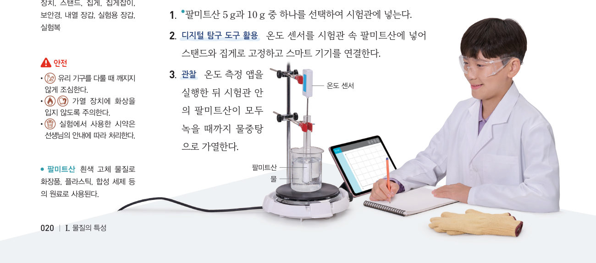

교과서 탐구의 ‘온도 센서 + 스마트 기기’를 아두이노로 바꾸자. 팔미트산 5 g과 10 g이 든 시험관을 같은 물중탕에 동시에 넣고 센서 2개로 두 가열 곡선을 한 그래프에 그려, 녹는점이 물질의 양에 관계없이 일정한지 확인하자.
준비물 아두이노 UNO, USB 케이블, LM35 온도 센서, 써미스터(10 kΩ)와 10 kΩ 저항(또는 아날로그 온도 센서 모듈), 브레드보드, 점퍼선, 열수축 튜브(방수), 팔미트산 5 g·10 g, 같은 크기의 시험관 2개, 시험관 집게, 비커(500 mL), 가열 장치(또는 전기 포트의 뜨거운 물 약 85 ℃), 스탠드, 보안경, 내열 장갑, 노트북(크롬)
| 팔미트산의 질량 | 온도가 일정한 구간의 온도(℃) | 일정한 구간의 길이(분) |
|---|---|---|
| 🔴 5 g (센서 1) | ||
| 🔵 10 g (센서 2) |
| 평가 항목 | 스스로 평가 |
|---|---|
| 디지털 탐구 도구(아두이노 온도 센서)를 활용하여 녹는 온도를 옳게 측정했다. | |
| 두 그래프를 비교해 녹는점이 물질의 특성임을 설명했다. | |
| 탐구 결과를 공유하고 비교하면서 과학에 대한 흥미를 느꼈다. |